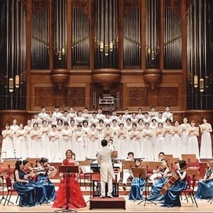
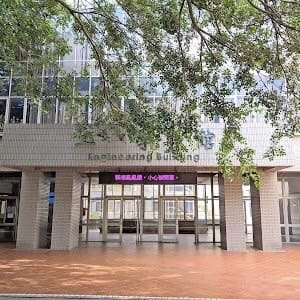
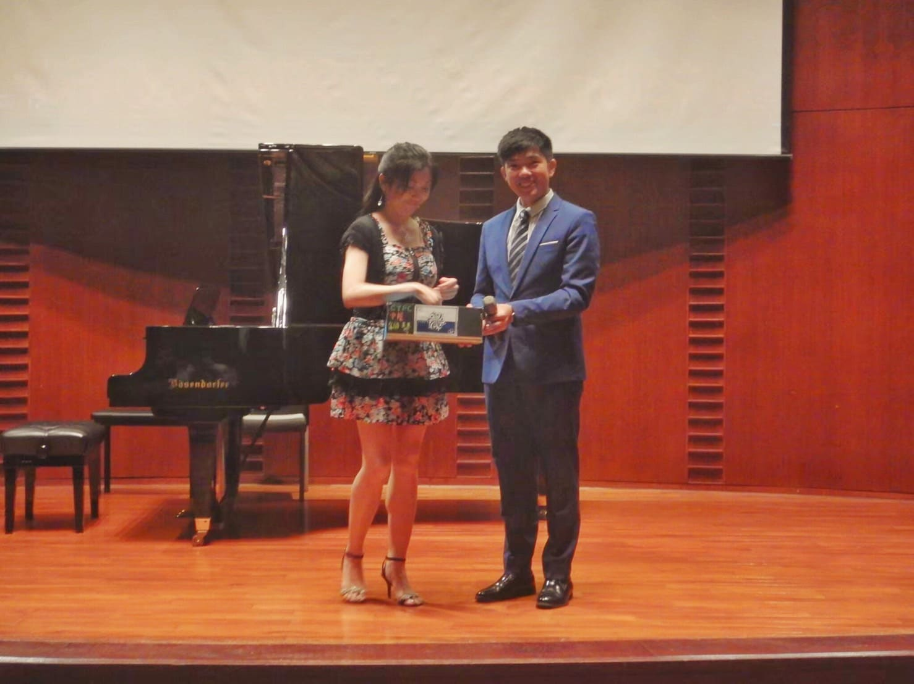
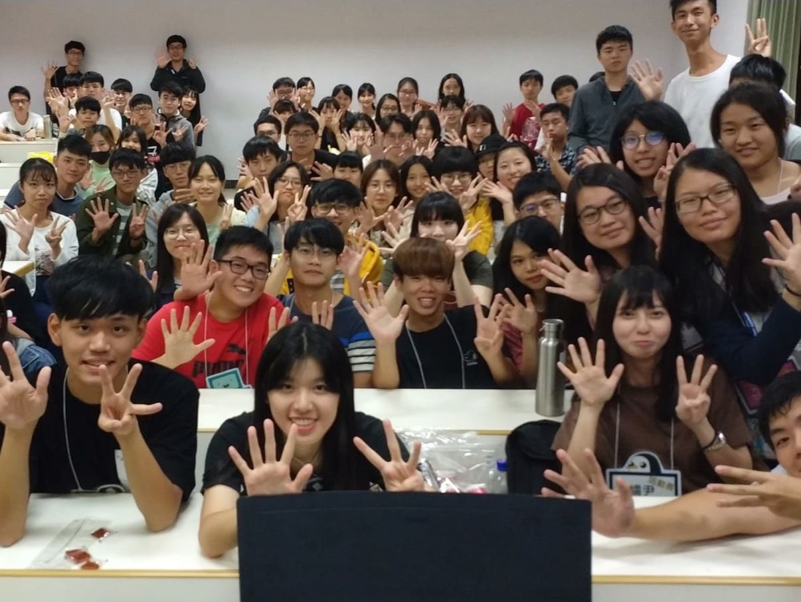
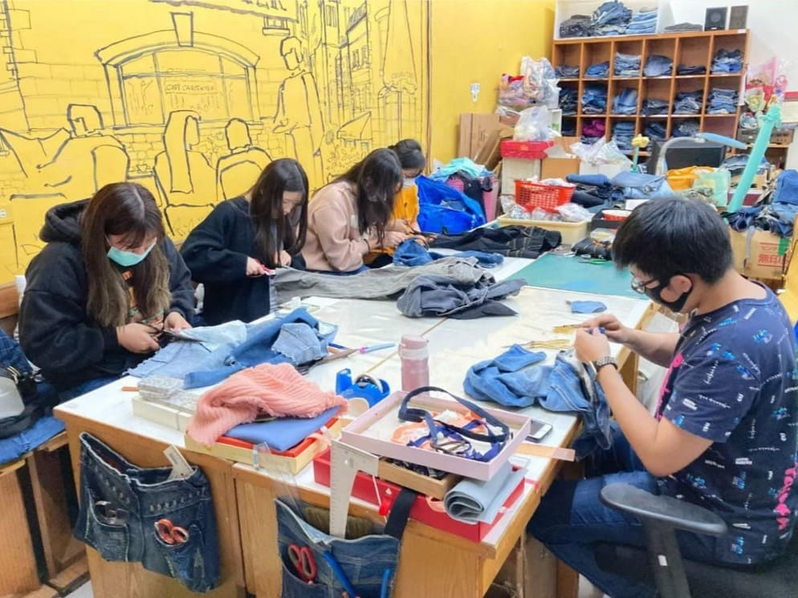
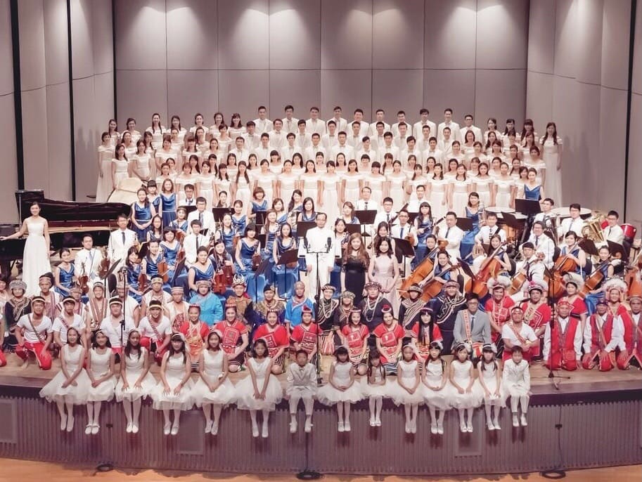

❧個人專長與技能☙
| ¶合唱⁋ | ¶主持⁋ | ¶彈鋼琴⁋ | ¶寫程式⁋ | ¶玩遊戲⁋ |
|  | ||||
| 合唱年資2年,在2021/3/8於台北國家音樂廳演唱 | 主持/司會場數超過十場,自小六開始擔任校內司儀,曾主持過達數百人的活動 | 琴齡3年,自國二開始學琴至高三結束,而大學則參與校內鋼琴社維持琴藝 | 觸碰程式2年,淺學過C++, HTML, MySQL, Java, Phython等程式語言 | 平時消遣消遣,成了專業人士XD ,詳情可看"關於我" |
❧學習歷程☙
| ¶大學以前⁋ | |||
|
|
¶大一,二⁋ |
||
| 就讀： 鎮東國小 斗六國,高中 |
 |
¶大三⁋ |
|
| 就讀： 中原大學 化學工程學系 |
|
¶現今⁋ |
|
| 跨系讀： 中原大學 工業系管理組 |

|
||
| 轉系讀： 中原大學 資訊管理學系 |
❧生活經歷☙
| 109年度1,2學期 鋼琴研究社 |
 | 大二的我 在鋼琴社中，擔任活動組的能力被所有幹部們看見，隔年以著高票當選社長一職。 |
 |
| 109年度第2學期 管理學 |
當時的管理學， 老師讓我們到"木匠的家"做服務學習，當時的我們學習到了他們"人休習‧物修惜"的理念。 |
 | |
| 2019/09/29 受邀至韓國演唱 |
 | 我所待的臺北 室內合唱交響樂團，在當時受邀至韓國演唱，更是我第一次面對臺下5000人的場合。 |
 |
❧聯絡資訊☙
| ¶Line⁋ | ¶Instagram⁋ | ¶FaceBook⁋ |